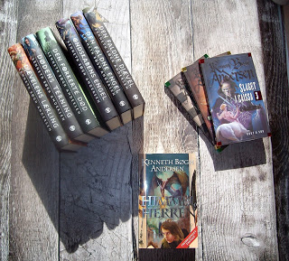
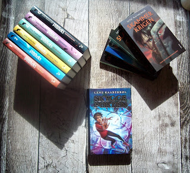
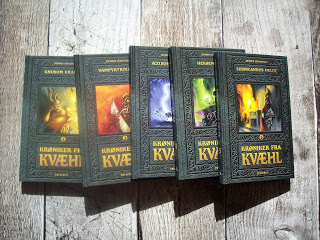
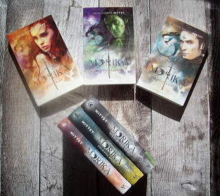
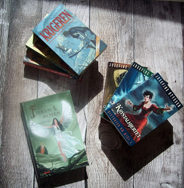
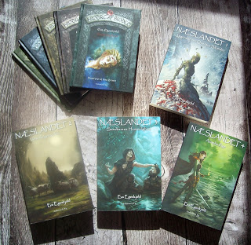
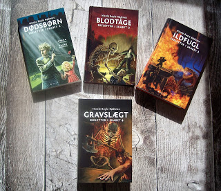
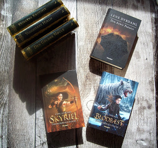
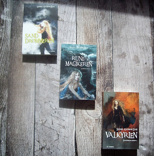
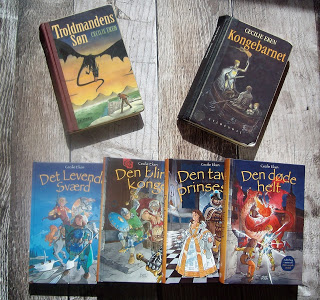

Top 10 Liste: Danske fantasyforfattere
I Top 10-Listerne vil vi give 10 anbefalinger til fantasylæsning, ud fra egen læsning.
Top 10 Listerne er ikke i prioriteret rækkefølge, hvor det bedste står øverst, men simpelthen 10 fantasyanbefalinger fra os til jer.
Rigtig god fornøjelse.
10 danske yndlingsforfattere

Kenneth Bøgh Andersen
Jeg læste første gang Kenneth Bøgh Andersens bøger som voksen, mens jeg studerede på Biblioteksskolen i Aalborg.
Her faldt jeg tilfældigt over hans første trilogi, Slaget i Caïssa, i en boghandel, og købte den med hjem, da jeg savnede noget nyt læsestof.
Siden har jeg læst stort set alle hans bøger (på nær De Hvide Mænd), og jeg er vild med hans blanding af humor, alvor, gys og magi.
Blandt mine absolutte favoritter hører serien Den Store Djævlekrig, som, udover at universet er spændende, tager nogle ret alvorlige temaer op, med både humor og varme.
Kenneth Bøgh Andersen er født i 1975, og begyndte at skrive allerede i 10. klasse.
Siden uddannede han sig til folkeskolelærer, og i år 2000 debuterede han med fantasytrilogien Slaget i Caïssa.
Han har skrevet over 30 bøger, primært gys og fantasy, og flere er på vej.
Han har vundet adskillige priser, og flere af hans bøger er solgt til filmatisering.
Læs mere på forfatterens egen hjemmeside

Lene Kaaberbøl
Mit første møde med Lene Kaaberbøl var Sølvhesten, som jeg læste som barn.
Den skræmte mig desværre så meget, at jeg først som voksen fik læst trilogien færdig,
og det først efter, at jeg havde læst hendes andre fantasybøger, hvoraf serien om Skammerens børn er min klare favorit.
Jeg har endnu ikke læst hendes voksenromaner, men har dem stående i reolen, til når jeg en sjælden gang holder pause fra fantasylæsningen.
Udover verdensopbygning er Lene Kaaberbøl utroligt god til at gøre sine personer levende, og hendes sprog er en fornøjelse at læse.
Lene Kaaberbøl er født i 1960, og debuterede som kun 15-årig med serien Tina og hestene.
Siden har hun skrevet over 40 bøger, hvoraf hovedparten er fantasy.
Blandt hendes mest kendte er serien om Skammerens børn, som er både filmatiseret, og opført som teater og musical.
Lene Kaaberbøl har vundet et utal af danske og udenlandske priser for såvel sine børne- og ungdomsbøger, som hendes voksenromaner.
Læs mere på forfatterens egen hjemmeside

Dennis Jürgensen
I modsætning til de fleste andre forfattere på denne liste stiftede jeg første gang bekendtskab med Dennis Jürgensen som barn.
Og selvom jeg endnu ikke har turdet læse flere af hans ungdomsgysere, så var jeg vild med hans skrivestil, og hans brug af humor, splat og magi.
Jeg har læst hans serier om Freddy og Monstrene, og Krøniken om Kvæhl et utal af gange, og læser dem stadig som voksen.
Dennis Jürgensen er født i 1961, og bestemte allerede efter folkeskolen, at han ville være forfatter.I 1981, efter tre år og mange afslag, kontaktede han Forlaget Tellerup, og samme år debuterede han med Kærlighed ved første hik.
Siden er det blevet til over 50 bøger, hvoraf hovedparten er skrevet til børn og unge.
I 2014 udgav han sin første krimi for voksne, og siden er det blevet til ialt 4 krimier.
Dennis har, som en af ganske få danske forfattere, sin egen fanklub, Dennis-Klubben.
Læs mere på forfatterens egen hjemmeside

Sidsel Sander Mittet
Sidsel Sander Mittet er et forholdsvis nyt bekendtskab.
Jeg læste hendes første bog, Rent blod, første bind i Morika-trilogien, tilbage i 2015, og blev hurtigt begejstret for hendes univers, skrivestil,
og den måde hun inddrager tunge og tabubelagte emner i sine bøger.
Sidsel Sander Mittet er født i 1984. Hun er uddannet cand. mag. i dansk, og underviser i dag på HF.
Hun debuterede som forfatter i 2015, med første bind i Morika-trilogien, og siden er det blevet til yderligere 5 bøger i samme univers.
Sidste bind af trilogien Krøniken om Morika er netop udkommet.
Udover at undervise og skrive bøger, optræder Sidsel også med ildshow i familiegruppen Ildfolket, som består af hendes mor og søster, samt en veninde.
Kilde:Wikipedia

Josefine Ottesen
Også Josefine Ottesen stiftede jeg første gang bekendtskab med som barn, da jeg læste hendes Eventyret om Fjeren og Rosen, og siden Dragens kys.
Sidstnævnte læste jeg et hav af gange, men alligevel var det først som voksen, at jeg for alvor begyndte at dyrke hendes forfatterskab.
Og det skete med endnu en trilogi jeg samlede op i en boghandler, mens jeg læste i Aalborg,
nemlig Krigeren, som betog mig med dens verdensopbygning, vidunderlige sprog og hovedperson.
Selvom jeg langt fra har læst alle hendes bøger (letlæsningsbøgerne udkom for sent for mig), så hører hun bestemt til på listen.
Josefine Ottesen er uddannet skuespiller, og har arbejdet både som skuespiller og instruktør.
Hun debuterede som forfatter i 1983 med Prinsesse Morgenrøde og Lindormen,
og siden er det blevet til over 60 bøger indenfor fantasy, historiske romaner, dystopi og eventyr, hvoraf flere har vundet priser.
Læs mere på forfatterens egen hjemmeside

Eva Egeskjold
Jeg mødte første gang Eva til den allerførste Fantasyfestival i 2015, hvor jeg også købte de første to bind af hendes serie om Næslandet.
Alligevel gik der næsten to år, hvor jeg i mellemtiden havde anskaffet mig tredje bind, før jeg endelig fik dem læst dem.
Og det var både godt og skidt. Godt, fordi der så ikke var så forfærdelig længe til sidste bind udkom, og skidt, fordi jeg i næsten to år havde snydt mig selv for en fantastisk læseoplevelse.
Siden har jeg læst resten af hendes bøger, og jeg venter spændt på, hvad hun udkommer med næste gang.
Eva Egeskjold er er født i 1972, og har siden hun var barn læst og skrevet meget.
Efter studentereksamen arbejdede hun blandt andet i Danmark og Wales, før hun fandt ud af hvad hun ville.
I 1996 søgte hun ind på Arkitektskolen, og i 2002 blev hun færdiguddannet.
Samtidig begyndte hun at skrive igen, og i 2011 debuterede hun med første bind i Næslandet, Legenden om Querqus Skjoldet.
Efterfølgende startede hun sit eget forlag, Forlaget Andersen & Vig, hvorfra hun i 2014 genudgav Næslandet 1, foruden bind 2, Vinterkrigens ofre.
Siden har hun udgivet de sidste to bind i Næslandet-serien og den letlæste serie Brødre af Blodet, som udkom simultant på dansk og engelsk.
Læs mere på forfatterens egen hjemmeside

Nicole Boyle Rødtnes
Jeg har fulgt Nicoles forfatterliv, siden hun debuterede med Dødsbørn, første bind af fantasyserien Skeletter i skabet,
og selvom jeg langtfra har læst alle hendes bøger (som pt. tæller over 50), så har jeg elsket samtlige de bøger jeg har læst af hende.
Og det ligegyldigt om det har været fantasy, gys, realisme, dystopi eller en femte genre.
Nicole er en utroligt alsidig forfatter, og hendes måde til at afstemme sproget efter genren og hovedpersonerne er helt eminent.
Nicole Boyle Rødtnes er født i 1985, og begyndte allerede som 13-årig at skrive hver dag.
Hun holdt det hemmeligt, men blev bedre og bedre til at skrive, og i 9. klasse skrev hun sin første roman.
Selvom hun fik afslag fra det forlag hun sendte den ind til, blev hun ved med at skrive, og fik lyst til at lære andre skriveglade unge at kende.
Derfor stiftede hun i 2003 foreningen HUF - Håbefulde Unge Forfattere - som i dag tæller over 100 medlemmer.
I 2008 blev hun optaget på Forfatterskolen for Børnelitteratur, og i 2010 debuterede hun med Dødsbørn.
Siden er det blevet til over 50 bøger for børn og unge inden for et væld af genrer.
Læs mere på forfatterens egen hjemmeside

Lene Dybdahl
En anden forfatter jeg har fulgt helt fra begyndelsen er Lene Dybdahl.
Hun fangede mig allerede med sin skrivestil da jeg læste Den Gyldne Nøgle, første bind af Nøglens Vogtere, og man kan mærke, at der ligger et kæmpe researcharbejde bag hendes bøger.
Lene Dybdahl er født i 1980, og uddannet cand. mag. i dansk og engelsk.
Hun blev opdaget af Forlaget Tellerup, da hun deltog i en skrivekonkurrence på Facebook, og blev ringet op fra forlaget,
som fortalte, at de gerne ville udgive hele Nøglens Vogtere-trilogien, selvom kun den første bog på det tidspunkt var færdig.
Første bind af serien udkom i 2012, og siden er det blevet til 5 andre bøger og flere noveller.
I dag er Lene selvstændig, og ved siden af sit forfatterjob arbejder hun med markedsføring, skrivekurser og rådgivning for andre håbefulde forfattere.
Læs mere på forfatterens egen hjemmeside
Kilde:Litteratursiden

Sidsel Katrine Slej
Jeg stiftede første gang bekendtskab med Sidsel Katrine Slej i 2015, hvor jeg læste de første to bind i hendes trilogi, Sanddrømmeren.
Og så gik ventetiden på sidste bind ellers i gang, for jeg var vild med blandingen af nordisk mytologi og fantasy, og så var det fantastisk med en fantasybog som startede i min barndomsby.
Sidsel Katrine Slej har en kandidatgrad i historie og multimedier, og arbejder freelance som forfatter og med grafisk tilrettelæggelse.
Hun bor i Aarhus sammen med sin familie, og debuterede i 2013 med Sanddrømmeren.
Siden udkom de sidste to bind i trilogien, og flere bøger er på vej.
Læs mere på forfatterens egen hjemmeside

Cecilie Eken
Som teenager læste jeg de første bøger af Cecilie Eken, og blev fanget af hendes sprog og universopbygning, og det har fulgt mig som voksen.
Selvom jeg langt fra læst alle hendes bøger, så har jeg elsket de bøger jeg har læst, og derfor fik hun også en plads her på listen.
Cecilie Eken er født i 1970, og har skrevet lige siden hun lærte det som barn.
Som 15-årig skrev hun sin første roman, og det bekræftede hende i, at hun ville være forfatter.
Hun debuterede som 23-årig i 1993 med Troldmandens søn, og begyndte efter et par år at læse litteraturvidenskab mens hun skrev.
Efter et par år droppede hun studiet, for at skrive på fuldtid, og siden er det blevet til et væld af bøger og skuespil inden for flere forskellige genrer.
Hun har skrevet alt fra billedbøger til skuespil, selvom bøgerne primært har været rettet mod børn og unge.
Læs mere på forfatterens egen hjemmeside